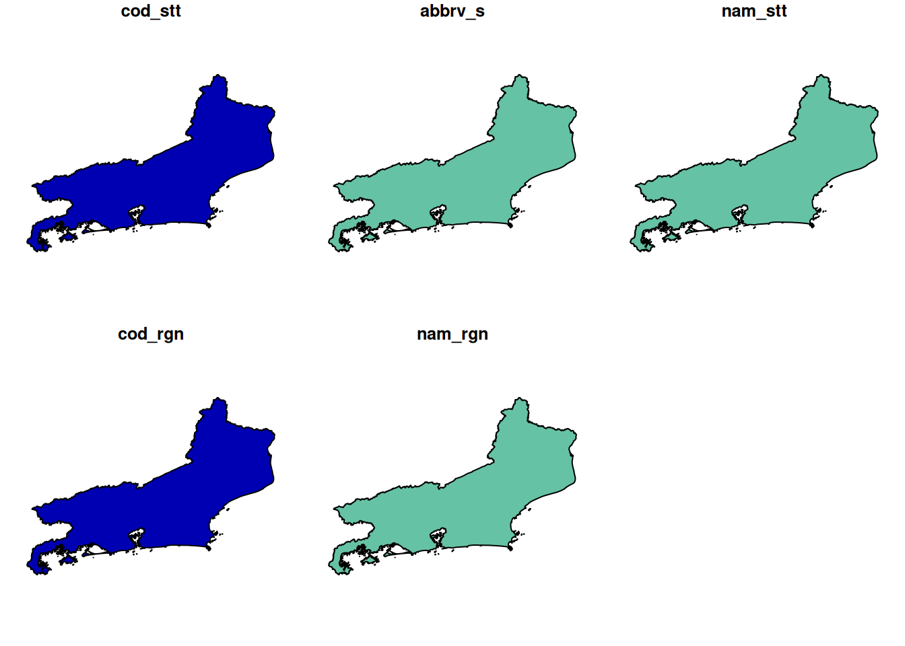
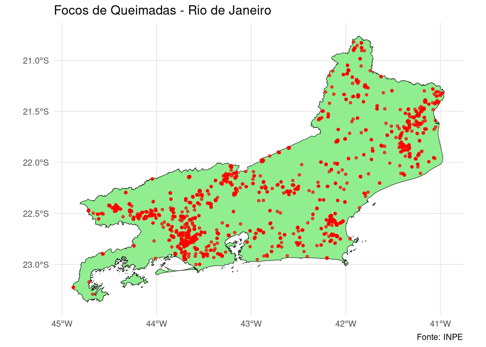
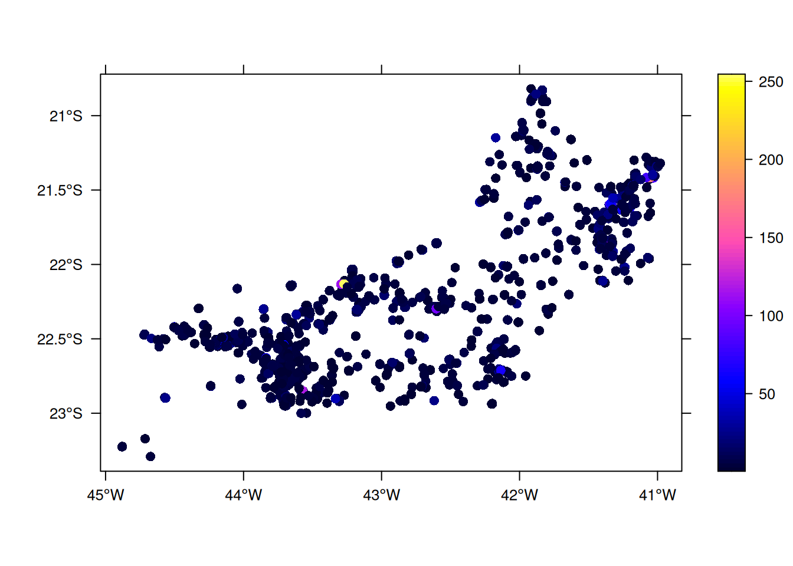
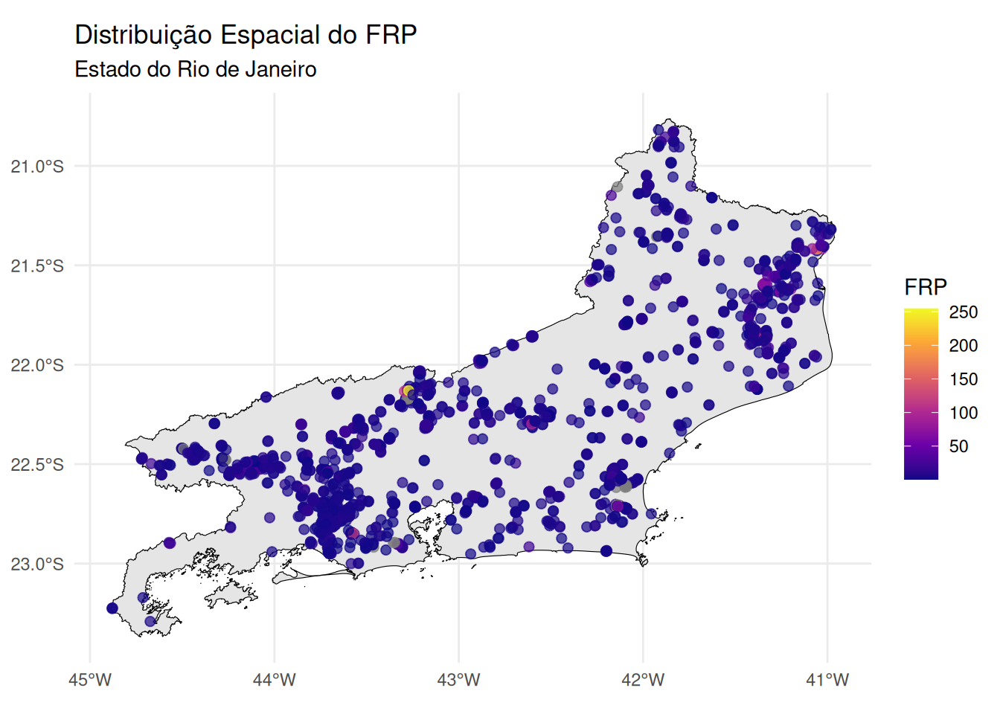
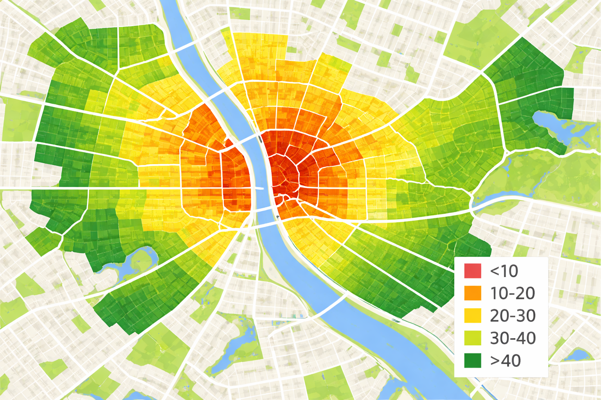
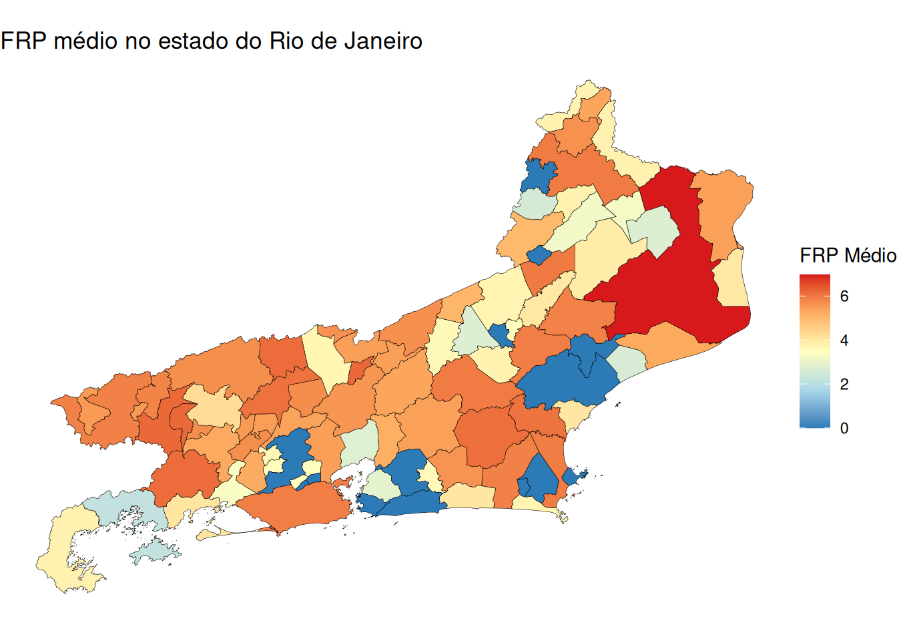

2 Tipologia dos Dados Espaciais
Objetivos do Capítulo
Ao final deste capítulo, o estudante deverá ser capaz de:
- Classificar os dados espaciais segundo a tipologia de Cressie (1993);
- Distinguir entre padrões pontuais, dados geoestatísticos e dados de área;
- Identificar a estrutura de dados adequada para cada tipo de análise;
- Realizar a leitura e visualização básica de dados espaciais em R.
Slides do Capítulo 2 - Tipologia dos Dados Espaciais
3 Tipologia dos Dados Espaciais
Os dados espaciais podem ser classificados segundo diferentes categorias, com base na natureza estocástica de suas observações e na forma como a informação geográfica é representada. Essa tipologia orienta a escolha de métodos estatísticos apropriados para análise.
Segundo Noel Cressie (1993), a estatística espacial pode ser dividida em três grandes áreas:
Dados de Processos Pontuais ou Padrões Pontuais: As observações ocorrem de maneira aleatória no espaço, como casos de uma doença, localização de crimes ou ocorrência de focos de queimadas. O objetivo é entender padrões de agrupamento, dispersão ou aleatoriedade desses pontos.
Dados de Geoestatística: Refere-se as observações que apresentam um atributo mensuravél em localizações contínuas ou irregulares (por exemplo, temperatura, poluição, altitude, teor de argila). Nesses casos, há interesse na dependência espacial entre valores próximos e na interpolação de valores para locais não amostrados, por meio de métodos como krigagem.
Dados de Área: Representam fenômenos agregados por unidades geográficas, como municípios, distritos ou setores censitários. As análises incluem autocorrelação espacial (ex: I de Moran) e modelos de regressão espacial adaptados a dados agregados.
3.1 Padrões Pontuais
O principal interesse está no conjunto de coordenadas geográficas representando as localizações exatas de eventos.
Estrutura dos dados com padrão de pontos
Latitude Longitude -22.90 -43.20 -22.91 -43.22 -22.92 -43.18 … …
Exemplos de aplicação:
- 🏥 Localização de casos de uma doença notificados em uma cidade.
- 🌳 Distribuição espacial de árvores em um parque urbano.
- 🐾 Registros de avistamentos de animais silvestres em uma reserva.
- 🔥 Pontos de ocorrência de focos de incêndio florestal detectados por satélite.
- 🔫 Registros de ocorrências de crimes em uma área urbana.
3.1.1 Exemplo: Focos de incêndios ocorridos no estado do Rio de Janeiro/Brasil no mês de dezembro de 2025.
Lendo os dados:
library(readxl)
# Carregar o arquivo
dados_pontos <- read_excel("dados/queimadas/queimadas_pontos.xlsx")Olhando os dados:
head(dados_pontos)Transformar os dados na classe de padrões pontuais:
library(sf)
pontos_sf <- st_as_sf(dados_pontos,
coords = c("longitude", "latitude"),
crs = 4326)library(sf): carrega o pacote sf (Simple Features), que permite trabalhar com dados espaciais no R.st_as_sf(): converte um data frame comum em um objeto espacial do tipo sf.dados_pontos: é o data frame de entrada que contém as colunas de coordenadas.coords = c("longitude", "latitude"): indica quais colunas do data frame representam as coordenadas geográficas (x e y).crs = 4326: define o Sistema de Referência de Coordenadas — o código 4326 corresponde ao datum WGS 84, o padrão usado pelo GPS.
📌 O que é CRS (Coordinate Reference System) ?
O CRS é como uma “regra de tradução” entre o que está em um mapa e o mundo real. Ele define como as coordenadas (como 140, 12) se relacionam com locais verdadeiros na Terra, dizendo se os valores estão em metros, graus ou outra unidade, e onde fica o ponto de partida (a origem). Sem um CRS, uma coordenada não tem significado, pois não sabemos onde ela realmente está nem em que escala.
🗺️ Por que isso é importante ?
Se dois mapas tiverem CRSs diferentes, os pontos não vão se alinhar corretamente — como tentar juntar peças de quebra-cabeça de caixas diferentes. Usar o CRS certo garante que todas as informações espaciais estejam bem posicionadas e coerentes. Por exemplo, o WGS 84 é usado por GPS e Google Maps (em graus), enquanto o UTM é usado para mapas locais mais precisos (em metros). Saber isso evita erros em análises espaciais e garante que os dados “conversem” entre si.
OBS: Se quiser saber um pouco mais a respeito do CRS, basta acessar (link)
Lendo o Mapa
Baixando o mapa via biblioteca geobr
library(geobr)
# Baixar polígono do RJ (código IBGE = 33)
rj_contorno <- read_state(code_state = 33, year = 2020)Lendo o arquivo.shp
rj_contorno <- st_read("malhas/rj_contorno.shp")#> Reading layer `rj_contorno' from data source
#> `/home/wagner/Downloads/spatial_ebook_quarto/spatial_ebook_project/malhas/rj_contorno.shp'
#> using driver `ESRI Shapefile'
#> Simple feature collection with 1 feature and 5 fields
#> Geometry type: MULTIPOLYGON
#> Dimension: XY
#> Bounding box: xmin: -44.88932 ymin: -23.36893 xmax: -40.95794 ymax: -20.76321
#> Geodetic CRS: SIRGAS 2000Plotando o mapa
plot(rj_contorno, title = "Contorno no estato do Rio de Janeiro")
Visualizar o mapa com os pontos
library(ggplot2)
# Plotar
ggplot() +
geom_sf(data = rj_contorno, fill = "lightgreen", color = "black") +
geom_sf(data = pontos_sf, color = "red", size = 1.0, alpha = 0.7) +
labs(title = "Focos de Queimadas - Rio de Janeiro",
caption = "Fonte: INPE") +
theme_minimal()
3.2 Geoestatística
Dados usados em geoestatística são atributos contínuos medidos em localizações fixas, na maioria das vezes amostrados no espaço geográfico, e que queremos analisar para entender como um fenômeno varia no espaço.
Estrutura dos dados geoestatísticos
Latitude Longitude Atributo Mensurado -22.90 -43.20 5.4 -22.91 -43.22 6.1 -22.92 -43.18 5.9 … … …

Exemplos de aplicação:
- 🌧️ Medição da quantidade de chuva em diferentes locais de uma cidade.
- 🦟 Contagem de ovos de Aedes aegypti em ovitrampas.
- 🌫️ Concentração de poluentes no ar em pontos georreferenciados.
- 🌽 Análise da produtividade agrícola em diferentes talhões de uma fazenda.
- Umas das aplicações mais importantes da geoestatística é a interpolação de dados, ou seja, estimação de valores em locais onde não há medição.
Neste tipo de dado, o evento aleatório de interesse é a posição espacial onde o fenômeno ocorre, e não uma variável medida em si. A análise busca entender se os pontos seguem um padrão aleatório, agrupado (clusters) ou disperso no espaço.
3.2.1 Exemplo: Os focos com os FRP (Fire Radiative Power) ocorridos no estado do Rio de Janeiro/Brasil no mês de dezembro de 2025.
- Primeiro vamos ler dos dados:
library(readxl)
# Carregar o arquivo
dados_geo <- read_excel("dados/queimadas/queimadas_geo.xlsx")Olhando os dados:
head(dados_geo)Transformar os dados em um objeto espacial:
library(sp)
sp::coordinates(dados_geo) <- ~ longitude + latitude
# Definindo a projeção
proj4string(dados_geo) <- CRS("+init=epsg:4326") # WGS84Plotar os pontos:
spplot(dados_geo['frp'], scales=list(draw=T), key.space="right", colorkey=T)
Lendo o Mapa
Baixando o mapa via biblioteca geobr
library(geobr)
# Baixar polígono do RJ (código IBGE = 33)
rj_contorno <- read_state(code_state = 33, year = 2020)Lendo o arquivo.shp
rj_contorno <- st_read("malhas/rj_contorno.shp")#> Reading layer `rj_contorno' from data source
#> `/home/wagner/Downloads/spatial_ebook_quarto/spatial_ebook_project/malhas/rj_contorno.shp'
#> using driver `ESRI Shapefile'
#> Simple feature collection with 1 feature and 5 fields
#> Geometry type: MULTIPOLYGON
#> Dimension: XY
#> Bounding box: xmin: -44.88932 ymin: -23.36893 xmax: -40.95794 ymax: -20.76321
#> Geodetic CRS: SIRGAS 2000Plotando o Bubble plot com gradiente de cor por intensidade
library(ggplot2)
library(sf)
# Converter objetos sp para sf
dados_sf <- st_as_sf(dados_geo)
# Plotar
ggplot() +
geom_sf(data = rj_contorno, fill = "gray90", color = "black") +
geom_sf(data = dados_sf, aes(color = frp), size = 2, alpha = 0.7) +
scale_color_viridis_c(name = "FRP", option = "plasma") +
labs(title = "Distribuição Espacial do FRP",
subtitle = "Estado do Rio de Janeiro") +
theme_minimal()
3.3 Dados de Área
Na análise espacial por áreas, o atributo de interesse costuma ser uma medida agregada (como contagem de casos, taxa de mortalidade, média de renda, etc.) calculada dentro de uma unidade geográfica bem definidas (como bairros, municípios, setores censitários ou regiões administrativas.)
Essas áreas são representadas por polígonos, que podem ter formas irregulares e manter relações espaciais com as áreas vizinhas, seja por fronteiras compartilhadas, conexões físicas (como estradas e rios), ou por semelhanças em características socioeconômicas (como nível de renda ou acesso a serviços).
O objetivo da análise de dados de área é identificar, explicar e interpretar padrões espaciais e tendências que ocorrem entre essas unidades geográficas pré-definidas.
Estrutura dos dados de área
Polígono Nome do Polígono Atributo Mensurado 110920 Alta Esperança 1000,50 123690 Divino 963,56 130269 Dourados 801,01 … … …

Exemplos de aplicação:
- 🦟 Taxa de incidência de dengue por bairro em uma cidade.
- 💸 Renda per capita por setor censitário.
- 🌽 Produtividade agrícola por microrregião.
- 🏫 Taxa de evasão escolar por município.
- 🚔 Taxa de criminalidade por distrito policial.
- 📦 Volume de vendas por zona de entrega.
3.3.1 Exemplo: Quantidade de Focos de incêndios por município ocorridos no estado do Rio de Janeiro/Brasil no mês de dezembro de 2025.
Lendo os dados:
# lendo a base de queimadas
dados_area <- readxl::read_excel("dados/queimadas/queimadas_area.xlsx")Olhando os dados:
head(dados_area)Lendo o Mapa
Baixando via geobr
Para acessar os dados dos limites territoriais de todos os estados brasileiros é necessário utilizar a função read_state.
# ============================================================================
# 2. BAIXAR MALHA MUNICIPAL DO RJ
# ============================================================================
library(geobr)
library(dplyr)
# Baixar a malha municipal do estado do Rio de Janeiro
# code_muni = 33 (código do estado do RJ)
mapa_rj <- read_municipality(code_muni = 33, year = 2024) |>
mutate(code_muni = as.character(code_muni))Lendo o arquivo.shp
Supondo o shape file já estar em algum diretório.
library(sf)
mapa_rj <- st_read("malhas/mapa_rj.shp")Renomeando as variáveis para ser semelhante ao objeto proveniente do geobr:
mapa_rj <- mapa_rj %>%
rename(
code_muni = code_mn,
name_muni = name_mn,
code_state = cod_stt,
abbrev_state = abbrv_s,
name_state = nam_stt,
code_region = cod_rgn,
name_region = nam_rgn,
geom = geometry
)Plotando o mapa apenas com as geometrias
library(ggplot2)
# Visualizar rapidamente o mapa
ggplot(mapa_rj) +
geom_sf()
Padronizando as chaves primárias
# Padronizar os nomes dos municípios em ambos os dataframes
mapa_rj <- mapa_rj %>%
dplyr::mutate(name_mn = tolower(name_muni))
dados_area <- dados_area %>%
dplyr::mutate(name_mn = tolower(name_mn))
# Fazer o left join usando as novas colunas padronizadas
mapa_rj <- mapa_rj %>%
left_join(dados_area, by = "name_mn")Plotando o mapa temático
mapa_seq <- ggplot(mapa_rj) +
geom_sf(aes(fill = media_frp), color = "black", size = 0.1) +
scale_fill_gradientn(
colors = c("#2c7bb6", "#abd9e9", "#ffffbf", "#fdae61", "#d7191c"),
name = "FRP Médio"
) +
labs(title = "FRP médio no estado do Rio de Janeiro") +
theme_void()
mapa_seq